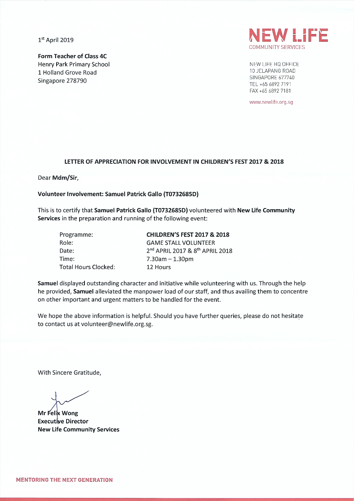
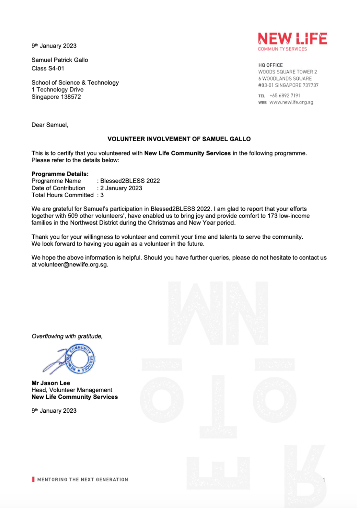

Volunteering Work

NLCS Children's Fest Volunteer (2017-2018)
Samuel volunteered at New Life Community Services as a Game Stall Volunteer duirng the Children's Fest 2017 and 2018

Blessed2Bless
Samuel participated in Blessed2Bless 2022, where he helped to serve the community by purchasing goods for low-income families in the community and delivering it to their houses
Covenant Evangelical Free Church Games Day 2022
Samuel Participated in Covenant Evangelical Free Church Games Day 2022 as a volunteer, helping to manage the children and teach them how to do the different activities
Secondary 2 Service Learning Programme 2021 (Penabur Secondary Tanjung Duren)
Samuel participated in the Secondary 2 Service Learning Programme 2021 at Penabur Secondary Tanjung Duren
Secondary 3 Service Learning Programme 2022 (NParks)
Samuel participated in the Secondary 3 Service Learning Programme at NParks which involved tree planting at HDB block areas
Secondary 4 Service Learning Programme 2023 (Buona Vista Youth Network)
Samuel participated in the Secondary 4 Service Learning Programme at Buona Vista Youth Network 2023, helping to teach and guide children on learning Python Coding